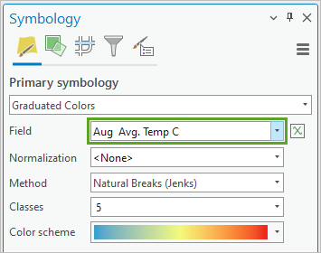

The questions for this lab are embedded within the instructions.
Each question carries specific points, clearly indicated alongside it.
The questions might have subsections within them.
The total score for this assignment is 10 points. Your final grade will be scaled from the total points you earn out of the maximum possible score to fit within a 0 to 10 scale.
When working on a lab, always create a dedicated folder for it and store all related files within that specific folder. For instance, avoid saving intermediate files in the C:/Documents directory; keep all materials organized and together.
Create a word document and name it as Lab-5-answers-YOURLASTNAME.docx. Insert each questions provided in this document and write down your answers for each questions. Upload the .docx file in Canvas. Do NOT upload a .pdf of the document.
Upload any additional file(s) required by this instructions in Canvas. You will find specific list of deliverables at the end of this page.
You do not have to upload any large ArcGIS Pro Project (.asprx) file unless explicitly mentioned in the instructions.
Many natural phenomena occur continuously across a landscape, for example, the distribution of nutrients in soil, dissolved oxygen in seawater, or rainfall. It is unrealistic to take measurements of these phenomena everywhere; you can only collect measurements at a set of sample locations. Using geostatistics, these sample measurements can be used to predict values at other, unmonitored locations. Many geostatistical methods also allow you to measure the uncertainty of your predictions.
Geostatistics is used widely for mapping natural phenomena in many fields, including meteorology, oceanography, geology, forestry, and the soil sciences. It is also applied to unnatural phenomena such as pollution. You have likely seen and used many maps that were created with the help of geostatistics.
In this lab, you’ll learn to do the following:
Create a continuous temperature map of Africa and the Middle East from a dataset of sample points.
Analyze the distribution of the sample data with histograms.
Create interpolated surfaces using the inverse distance weighting and kriging methods.
Compare the accuracy of different surfaces using cross-validation.
Map the standard error of prediction for a chosen surface.
First, you’ll download the project package and use the data stored in this package throughout the lab to interpolate temperatures through the Geostatistical Wizard.
Locate the downloaded file on your computer. Double-click InterpolateTemperatures.ppkx to open it in ArcGIS Pro.
Spend a moment visually exploring the map.
Fig. 102 Map showing temperature point data across Africa and the Middle East#
The points on the map represent temperature samples. Each point stores average temperature values for each month. You will examine the data distribution of some of these fields to determine which to use for interpolation.
In the Contents pane, right-click the Temperature layer. Point to Create Chart and choose Histogram.
Fig. 103 Create Chart Histogram option in the layer’s context menu#
Both the Chart Properties pane and an empty chart view appear.
In the Chart Properties pane, change Number to Jan Avg. Temp C (short for January Average Temperature in Celsius) and check the box for Show Normal distribution.
Fig. 104 Chart Properties pane showing Number variable set to Jan Avg. Temp C#
The chart view updates to show a histogram representing the maximum temperature values from the point data. You can see that the values range from -10.2 to 30.1° Celsius. The values shown on the axis may vary, depending on the width of the pane.
Fig. 105 Histogram of the Distribution of Jan Avg. Temp C showing more data on the higher values#
The curved blue line represents the normal distribution of the chart. Data with a normal distribution has a bell-shaped curve. You can see that the distribution of average temperatures in January is not normal, but rather it is skewed to the right.
In the Chart Properties pane, change Number to Aug Avg. Temp C. The histogram updates to the new field.
Fig. 106 Histogram of Distribution of Aug Avg. Temp C showing a normal distribution#
Temperatures in August have more of a normal distribution. Interpolation methods are most effective when the data is close to a normal (bell-shaped) distribution, and some geostatistical methods require that the data be normally distributed. For this reason, you will use Aug Avg. Temp C for the rest of this tutorial.
Note: If your data does not follow a bell curve, you can apply a transformation to make it closer to a normal distribution. Read about this process at Box-Cox, arcsine, and log transformations.
Close the chart view.
On the Contents pane, right-click the Temperature layer and choose Symbology. The Symbology pane appears.
Change Field to Aug Avg. Temp C.

Fig. 107 Symbology pane for the Temperature layer with field set to Aug Avg. Temp C#
The map updates to show temperatures for August.
Create geostatistical surfaces using inverse distance weighting#
Next, you’ll create surfaces of predicted temperature values for all of Africa and the Middle East using the sample data.
In geostatistics, you can make the assumption that things that are closer together are more alike than things that are far apart. Therefore, any unknown location is probably going to have a similar value to the known locations nearest to it.
The Geostatistical Wizard in ArcGIS Pro offers many different interpolation methods for creating predicted surfaces. Usually, you will not know which one to use until you have tried several and compared their results. The first method you will try is inverse distance weighting, also sometimes called IDW.
IDW is an exact method. This means that the resulting surface will not vary from the sample values. It is also one of the simpler methods to execute. You can read more about IDW at How inverse distance weighted interpolation works.
In the Contents pane, right-click the Temperature layer and choose Properties.
The Layers Properties: Temperature pane appears.
Click the Source tab.
Scroll down and click Spatial Reference to expand that section.
The table’s first parameter is Projected Coordinate System.
Fig. 108 Layer Properties for the Temperature layer showing Projected Coordinate System as Africa Equidistant Conic#
Geostatistics relies on distance measurements. To minimize the distortion of these distances, your input data must use a projected (rather than geographic) coordinate system. You can give it one using the Project geoprocessing tool.
This data uses an Equidistant Conic projection centered on Africa. There is no projection that can perfectly preserve all distances on your map, but equidistant projections will do a better job of this than others. The choice of projection is more important when mapping a large area, such as a continent.
Click Cancel to close the Layer Properties window.
On the ribbon, on the Analysis tab, in the Workflows group, click Geostatistical Wizard.
Fig. 109 Geostatistical Wizard button on the ribbon#
The Geostatistical Wizard appears.
Under Deterministic methods, choose Inverse Distance Weighting. (You may need to scroll down to find this option.)
For Data Field, choose Aug Avg. Temp C.
Fig. 110 Inverse Distance Weighting and Aug Avg. Temp C on the Geostatistical Wizard#
Click Next.
Fig. 111 Inverse Distance Weighting properties and preview map on the Geostatistical Wizard#
On this page you can interactively change the parameters of the IDW method and see how the model responds in the preview map. The Identify Result section tells you the predicted value for any location.
In the Geostatistical Wizard, click some different parts of the preview map to see the predicted temperature for that area in the Identify Result section.
Under General Properties, change Neighborhood Type to Smooth. The smooth option will generally make the prediction surface smoother and less jagged. The preview map updates. When Neighborhood Type is Standard, there is only one circle on the preview map. When it is Smooth, there are three concentric circles.
Fig. 112 Preview map of the Geostatistical Wizard with one circle compared to three#
The circles on the preview map represent the search neighborhood. To predict a new value, only the sample points that are nearby—within the search neighborhood—are considered. You can read more about this process, including the smooth neighborhood type, at Search neighborhoods.
Verify that Smoothing Factor is set to 0.2.
Click Finish.
On the Method Report, click OK. A new layer is added to the map, representing a surface of maximum temperature for the Africa region.
In the Contents pane, select Inverse Distance Weighting and press F2 on the keyboard to make the name editable.
Rename the layer IDWSmooth.
Drag Inverse Distance Weighting above Oceans and expand it.
The map now shows temperature predictions for places that had no temperature data.
Fig. 114 Map showing temperature point data and interpolated surface#
Next, you will create a slightly different surface using the same data and the same method.
Open the Geostatistical Wizard. (On the ribbon, on the Analysis tab, click Geostatistical Wizard.)
Confirm that the selected method is Inverse Distance Weighting and the selected Data Field is Aug Avg. Temp C. Click Next.
For Neighborhood Type, choose Smooth.
Click the Click to optimize button in the Power parameter.
Fig. 115 Optimize button on the Power control under General Properties#
The Power value changes to 3.1076.
Not all the points in the search neighborhood are considered equal. Those that are nearer to the location being predicted are given more weight in the calculation.
If Power is 0, all points in the neighborhood are weighted equally. The higher the power, the more rapidly the weights decrease with distance. A higher power of 3.1 results in a surface that appears more localized and less general, since points that are farther away have less of an influence.
Expand Weights and scroll through the list to find weights of different colors. This list represents all of the points within your search radius and includes the weights assigned to them.
Fig. 116 Some of the weights in a list of 393 neighbors#
Click some of the values in the list to see the points selected on the preview map. Red points will exert more influence over the prediction than green ones.
Collapse Weights and click Next. The Cross validation window provides information about how reliable your interpolation will be.
Fig. 117 Cross validation page of the Geostatistical Wizard, showing a scatter plot and summary values#
The information on this page allows you to assess the accuracy of the prediction surface. It does this by removing a single point from the dataset and using all remaining points to predict the value of the removed point.
The scatter plot compares predicted values (on the x-axis) to measured values (on the y-axis) and is considered best when the thin gray line coincides with the thick blue line.
The Mean value tells you if the model is skewed toward predicting values that are too high or too low. It is best when it is closest to 0.
The Root-Mean-Square value is almost 2.5. This indicates that on average, the predicted temperature values differed from the measured values by about 2.5° Celsius.
Click Finish, and on the Method Report window, click OK. A new layer is added to the map.
Rename the layer IDWSmoothOptimized.
In the Contents pane, turn off the Temperature point layer.
Uncheck and check IDW Smooth Optimized to compare it with IDW Smooth.
Fig. 118 IDW Smooth Optimized (left) is compared to IDW Smooth (right).#
The two layers are similar, but the newer layer has more red. Which one is better? You can compare the accuracy of the two layers to help you decide.
In the Contents pane, select both IDW Smooth and IDW Smooth Optimized. (Note: To select more than one layer, press the Shift key while selecting layers.)
Right-click and choose Cross Validation.
Fig. 119 IDW Smooth Optimized and IDW Smooth selected in the Contents pane with Cross Validation selected in their context menu#
Two Cross validation window for each layer appears. One of them is blocking the other from view.
Move the window aside so you can see both at once.
These are the same Cross validation windows that were shown in the Geostatistical Wizard. You already reviewed one of them, but the results are sometimes more useful when you can compare them between multiple prediction surfaces.
The Summary tab reports numerical errors for each surface. The closer the Root-Mean-Square value is to 0, the more accurate the created surface is.
Fig. 121 IDW Smooth Optimized has a Root-Mean-Square value of 2.4998 and IDW Smooth has a value of 2.669.#
IDW Smooth Optimized has the smaller error value and so can be considered the more reliable prediction surface.
Close both Cross validation windows.
In the Contents pane, select only IDW Smooth. Right-click this layer and choose Remove.
On the toolbar at the top corner of the ribbon, click the Save button.
Inverse distance weighting is considered an easy and fast interpolation method. It is good for getting an initial picture of the phenomenon you are mapping, and sometimes you may need to use it because it will follow measured values exactly. But it can also produce a ring effect around islands in your data.
Next, you’ll try kriging to see if you can get more accurate results. Kriging is a very flexible geostatistical method. This means that you can adapt it in many ways to suit your data, but it also means that there are many more choices that must be made.
Open the Geostatistical Wizard.
Under Geostatistical methods, choose Kriging / CoKriging and click Next.
Under Ordinary Kriging, choose Prediction to create a surface of predicted values similar to the ones you created earlier using IDW.
Fig. 122 Prediction option selected under Ordinary Kriging with Dataset #1 options set to None#
For now, you will create a surface with the default parameters for ordinary kriging.
Click Finish and click OK. A new layer is added to the map.
Rename the layer KrigingDefault.
Compare Kriging Default to IDW Smooth Optimized.
Fig. 123 Kriging Default (left) is compared to IDW Smooth Optimized (right).#
The new layer is much more general in its pattern. Next, you’ll change some of the parameters to try to create a better geostatistical surface.
Open the Geostatistical Wizard.
Confirm that the selected method is Kriging / CoKriging and click Next.
Under Ordinary Kriging, select Prediction and click Next.
On the Semivariogram/Covariance Modeling page, click the Optimize model button.
Fig. 124 The Optimize button is the first option found under General Properties.#
The Optimize button finds the parameters that result in the smallest prediction errors. Notice that the semivariogram map and some of the parameters have changed. In this case, the change is minimal.
Click Next.
On the Searching Neighborhood page, change Sector Type to 8 Sectors.
Fig. 125 Sector Type set to 8 Sectors on the Searching Neighborhood page#
Increasing the number of sectors ensures that neighbors are searched for in all directions, and a large cluster of nearby points in only one direction will not have all of the influence over the predicted value.
Click Next and review the results on the Cross validation window. that kriging provides you with many more values than inverse distance weighting.
Fig. 126 Six values shown in the Cross validation window#
Click Finish and click OK. Another layer is added to the map.
Rename the layer KrigingModified.
Compare Kriging Modified to Kriging Default.
Fig. 127 Kriging Modified (left) is compared to Kriging Default (right)#
They are very similar.
In the Contents pane, select Kriging Default and Kriging Modified. Right-click and choose Cross Validation.
Arrange the windows so you can see both at once. Analyze the values on the Summary tab.
Statistics
Kriging Default
Kriging Modified
Mean
-0.013
-0.024
Root Mean Square
2.294
2.283
Mean Standardized
0.001
0.003
Root Mean Square Standerdized
0.854
0.841
Average Standard Error
2.740
2.775
Numbers closer to zero indicate better accuracy. The exception is Root-Mean-Square Standardized. In this case, values closer to 1 are desired.
It is not immediately obvious from these values which surface is better. Kriging Default has better values for every category except Root-Mean-Square. However, this does not necessarily mean it is better.
If any of these values are too far off, you should eliminate that layer. But in this scenario, both layers show good cross-validation results, so you can use Root-Mean-Square as the tie breaker value. It is also desirable that the Root-Mean-Square and Average Standard Error values be close to one another. If there is a large difference between these values, it may indicate that the prediction is unstable.
The Cross validation report indicates that Kriging Modified is slightly more reliable than Kriging Default.
Open the Cross validation window for IDW Smooth Optimized. This surface has a Root-Mean-Square value of 2.5. It is less reliable than either of the kriging surfaces.
Close all three Cross validation windows.
Remove IDW Smooth Optimized and Kriging Default from the map.
Save the project.
Kriging is a more advanced method than IDW and requires you to make more decisions. But this allows you to experiment with the parameters until you find those that are a good fit for your data and phenomenon. Kriging also gives you more tools to assess the accuracy of your results, such as a map of the standard error estimates, which you will create next.
You have now made four different surfaces of temperature covering Africa and the Middle East. Each was interpolated from the same data, but each showed a different surface. Clearly these predictions are useful, but they cannot be taken as fact. Some parts of the surface (where there are many data points) can be considered more accurate and reliable than others (where the data is scarce). It is useful to map these degrees of uncertainty to aid decision makers.
In the Contents pane, select Kriging Modified.
On the ribbon, on the Geostatistical Layer tab, change Display Type to Standard Error.
Fig. 128 Display Type set to Standard Error on the Appearance tab of the Geostatistical Layer contextual ribbon#
The map changes to become mostly red.
In the Contents pane, turn on Temperature.
Fig. 129 Map with temperature points and red standard error surface#
Standard errors are measures of uncertainty for the predicted values. The dark-red areas on the map have larger standard error values and therefore lower certainty in the predicted values. Lighter areas are those where you can place more trust in the results. This map suggests that the results have the greatest standard error in the ocean. This makes sense, because there were no sample measurement points in the ocean (although there were some on small islands).
For the Kriging Modified layer, change the Display Type back to Prediction. For this map, you are only interested in predicting land temperatures, so the ocean can be masked out.
In the Contents pane, drag the Oceans layer above Kriging Modified.
Fig. 130 Map with interpolated surface partially masked by the oceans layer#
Geostatistics can help you map many phenomena as continuous surfaces even though you only have discrete point data. This can be very useful for visualizing patterns and performing analysis. You may not have a weather station in your study area, but a set of weather stations in a wider region can provide the data you need to understand and predict temperatures everywhere.
The Geostatistical Wizard offers many interpolation methods, and each one has parameters that can be tweaked to produce different results. Why? Depending on the phenomenon you are mapping, and the data you have available, one model may give you more reliable results than another. If you are going to make decisions based on an interpolated surface, finding the most accurate model is critical.
a. Create a map layout with two side by side maps of the interpolated rasters from IDW and Kriging. Note that the two side by side maps should be on one layout with two data frames. On top of the map, show the administrative boundaries of the continents (you need to download that from any source). The two maps should also share the same extent and scale bar. For example, you cannot zoom in too much for the IDW map and zoom out for the Kriging, they have to match at the spatial scale and extent. Other necessary map tools should be there. Submit the final layout as a pdf or jpg. <7 pt>
b. In the word document, right down the major differences you see in the two outputs and which one would you pick as your analysis surface and why? <3 pt>